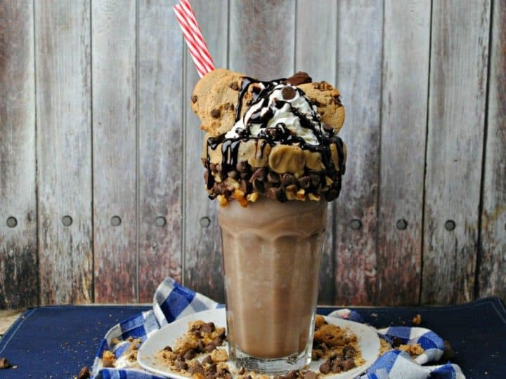

Cookie Dough Milkshake
Ingredients:
1 cup (8oz/230g/4 scoops) Vanilla ice cream
½ Cup (4floz/115g) milk
¼ teaspoon vanilla extract
¼ cup (or more) cookie dough pieces
Step:
Process all ingredients in a blender until smooth, around 2-3 minutes. Serve immediately in individual glasses, add some Cookie Dough ice cream on top if you want.